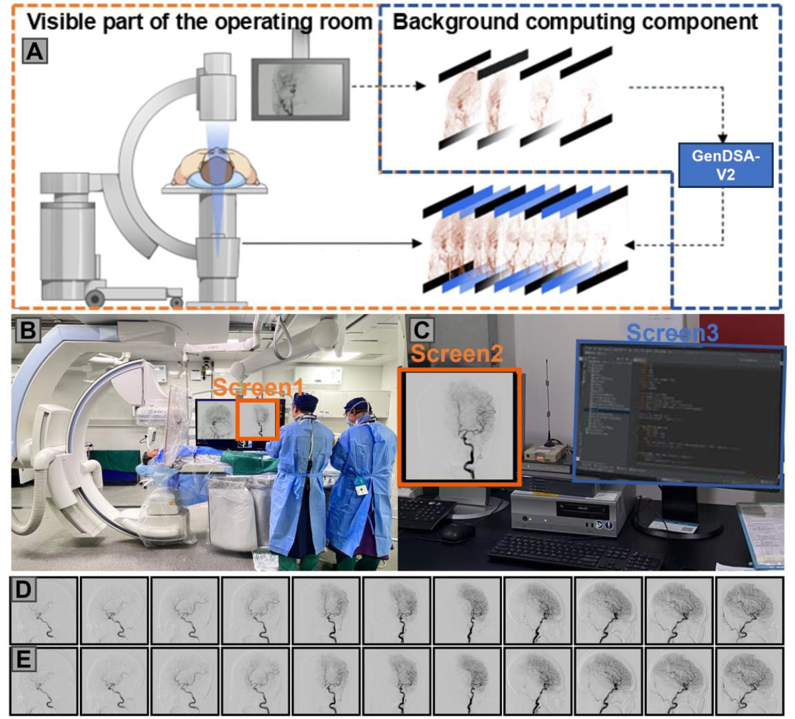
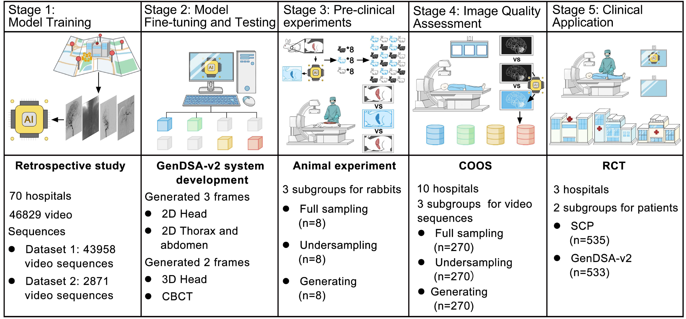
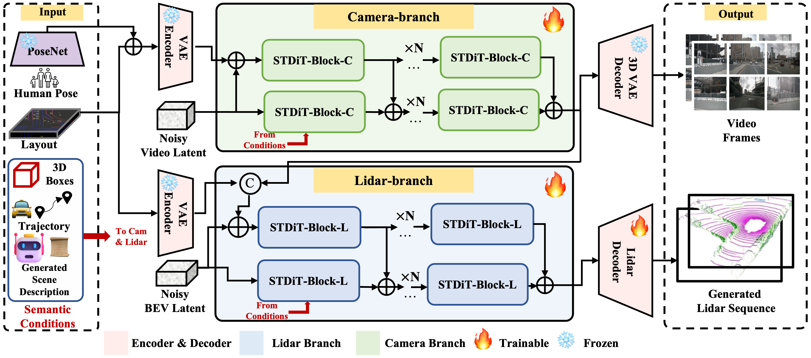
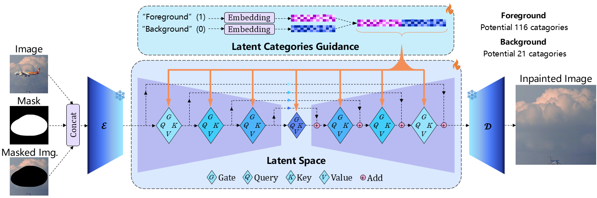
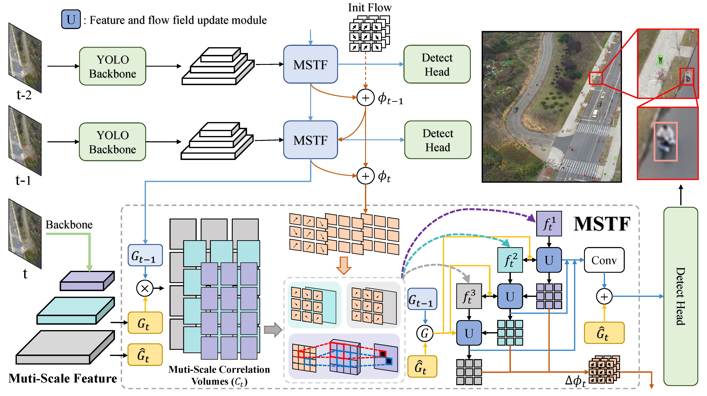
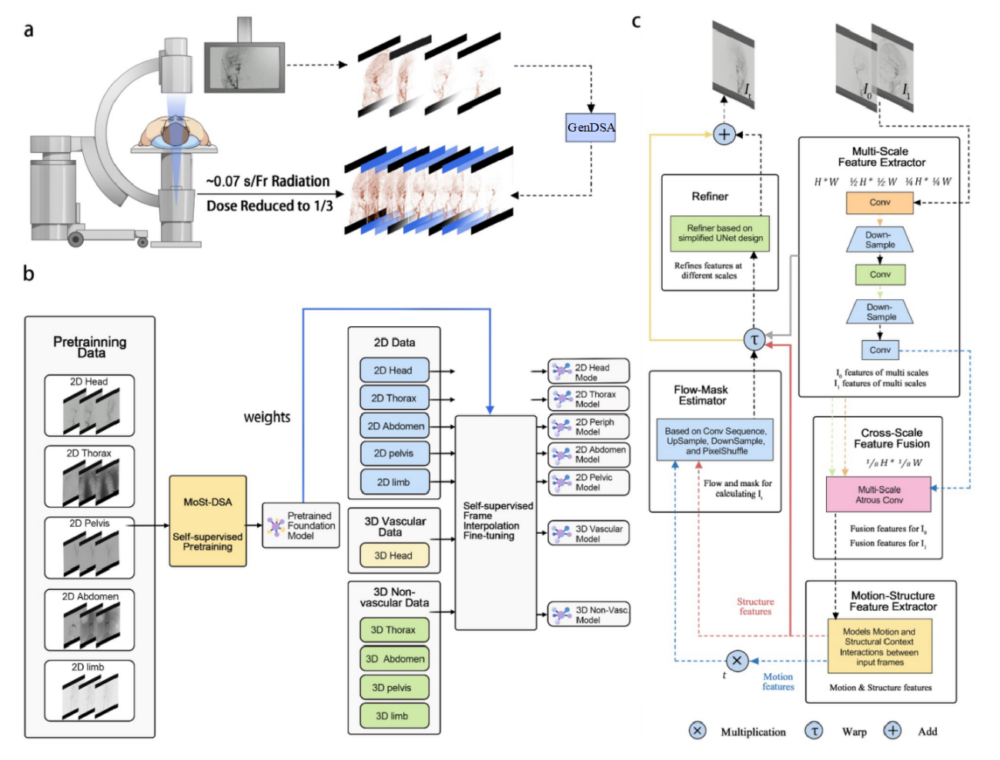

|
Ziyang Xu (徐子扬) I am currently pursuing my first-year Ph.D. degree within the School of Electronic Information and Communications (EIC) at Huazhong University of Science and Technology (HUST, 华中科技大学), benefitting from the guidance of Professors Xinggang Wang and Wenyu Liu. Prior to this, I received my M.E. degree in Information and Communication Engineering from EIC, HUST (华中科技大学) in 2025, and my B.E. degree in Information Engineering from the School of Information Engineering (IE), Wuhan University of Technology (WHUT, 武汉理工大学) in 2022. Email | Google Scholar | Github | Bilibili | X | RedNote Latest Update: June 22, 2026 |
{kind=link}
ResearchMy scholarly interests revolve around the fields of Artificial General Intelligence, Computer Vision, Image/Video Generation, Medical Image Analysis, and Object Detection/Segmentation. Representative papers are highlighted. |


|
Moebius: 0.2B Lightweight Image Inpainting Framework with 10B-Level Performance
European Conference on Computer Vision (ECCV), 2026
|
|
  |
Generative AI-based Low-Dose Digital Subtraction Angiography for Intraoperative Radiation Dose Reduction: a Randomized Controlled Trial
Nature Medicine, 2025 (IF 52.5)
|

 |
Genesis: Multimodal Driving Scene Generation with Spatio-Temporal and Cross-Modal Consistency
Conference on Neural Information Processing Systems (NeurIPS), 2025
|
|
 |
PixelHacker: Image Inpainting with Structural and Semantic Consistency
arXiv preprint, 2025
|


|
GaraMoSt: Parallel Multi-Granularity Motion and Structural Modeling for Efficient Multi-Frame Interpolation in DSA Images
AAAI Conference on Artificial Intelligence (AAAI), 2025
|
|
 
|
XS-VID: An Extremely Small Video Object Detection Dataset
arXiv preprint, 2024
|

 |
Large-scale Pretrained Frame Generative Model Enables Real-Time Low-Dose DSA Imaging: an AI System Development and Multicenter Validation Study
Med (Cell Press), 2024 (IF 17)
|


|
MoSt-DSA: Modeling Motion and Structural Interactions for Direct Multi-Frame Interpolation in DSA Images
European Conference on Artificial Intelligence (ECAI), 2024
|
Competition Experience🚩: Team leader; ranking first
🚩 The 20th Innovation Cup College Students Extracurricular Academic Science and Technology Works Competition (创新杯大学生课外学术科技作品竞赛), Special Prize (特等奖) in the Mathematical Information Group (数理信息组), 2020.
We get the only special prize (唯一特等奖) in the Mathematical Information Group.
🚩 Huawei Cup 19th China Graduate Mathematical Modeling Competition (华为杯中国研究生数学建模竞赛), National Second Prize (国家级二等奖), 2022.
Top 13% (前13%) of all contestants.
🚩 Artificial Intelligence Track of the 14th China College Student Computer Design Competition (中国大学生计算机设计大赛人工智能赛道), National Third Prize (国家级三等奖), 2021.
🚩 National College Student Mathematical Modeling Competition (全国大学生数学建模竞赛), Second Prize in Hubei Province (湖北省二等奖), 2020.
National College Student Integrated Circuit Innovation and Entrepreneurship Competition (全国大学生集成电路创新创业大赛), Third Prize in Hubei Province (湖北省三等奖), 2021.
|
Selected Honors & Awards
National Scholarship for Master Student (国家硕士生奖学金), 2024.
The most prestigious honor for university students in China, awarded to only 0.2% of candidates nationwide.
Served as team leader and led a provincial undergraduate innovation and entrepreneurship training project, "Research and Implementation of a Video-Based Vehicle-Assisted Driving Device"; received Excellent Completion (优秀结题) in 2021.
Outstanding Master's Graduate (优秀硕士毕业生), 2025.
Excellent Master's Student (三好硕士生), 2024.
Outstanding Undergraduate Graduate (优秀本科毕业生), 2022.
Excellent Undergraduate Student (三好本科生), 2021.
|